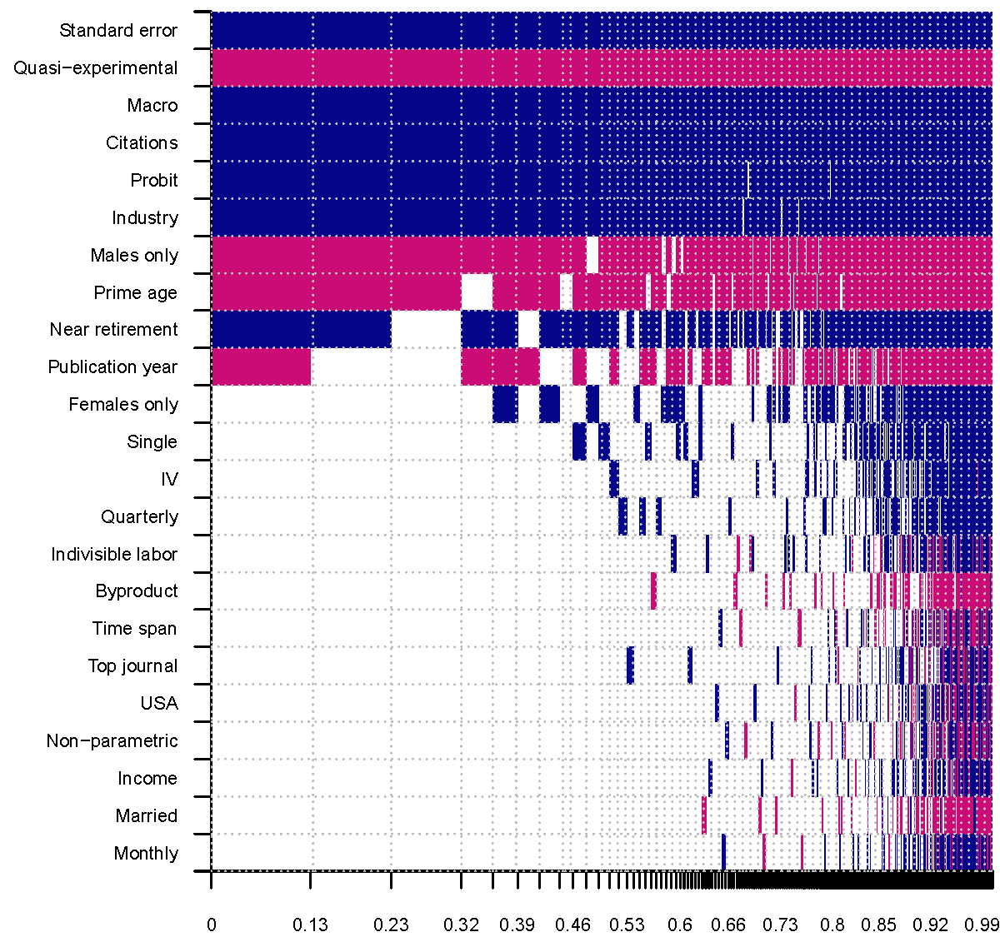

The intertemporal substitution (Frisch) elasticity of labor supply governs how structural models predict changes in people's willingness to work in response to changes in economic conditions or government fiscal policy. We show that the mean reported estimates of the elasticity are exaggerated due to publication bias. For both the intensive and extensive margins the literature provides over 700 estimates, with a mean of 0.5 in both cases. Correcting for publication bias and emphasizing quasi-experimental evidence reduces the mean intensive margin elasticity to 0.2 and renders the extensive margin elasticity tiny. A total hours elasticity of about 0.25 is the most consistent with empirical evidence. To trace the differences in reported elasticities to differences in estimation context, we collect 23 variables reflecting study design and employ Bayesian and frequentist model averaging to address model uncertainty. On both margins the elasticity is systematically larger for women and workers near retirement, but not enough to support a total hours elasticity above 0.5.
Fig: Publication and identification biases drive the results

Reference: Ali Elminejad, Tomas Havranek, Roman Horvath, and Zuzana Irsova (2023), "Intertemporal Substitution in Labor Supply: A Meta-Analysis." Review of Economic Dynamics 51, 1095-1113.